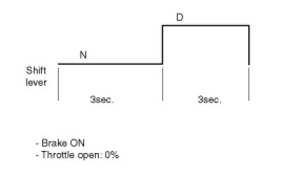

Repair Procedures
Adjustment
Transaxle Control Module(TCM) Learning
When shift shock is occurred or parts related with the transaxle are replaced, TCM learning should be performed.
In the following case, TCM learning is required.
- Transaxle assembly replacement
- TCM replacement
- TCM upgrading
TCM learning procedure
1. Automatic Transaxle Fluid (ATF) temperature: 40 - 100°C (104 - 212°F)
2. Static learning
Repeat the below shift pattern four times or more with stepping on the brake.

3. Driving learning
Drive the vehicle from a stop in D through all gears 1st, 2nd, 3rd, 4th, 5th and 6th gear while holding the throttle steady at the specified Throttle Position Sensor (TPS) value (15 - 25%).